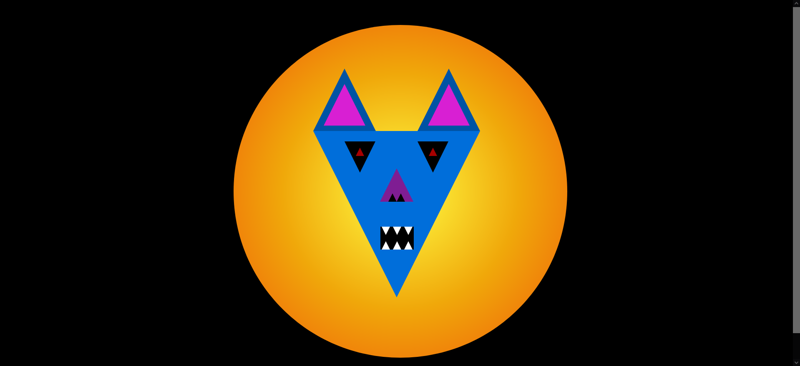
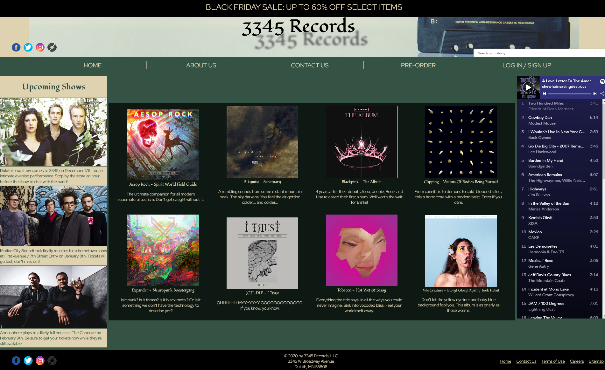
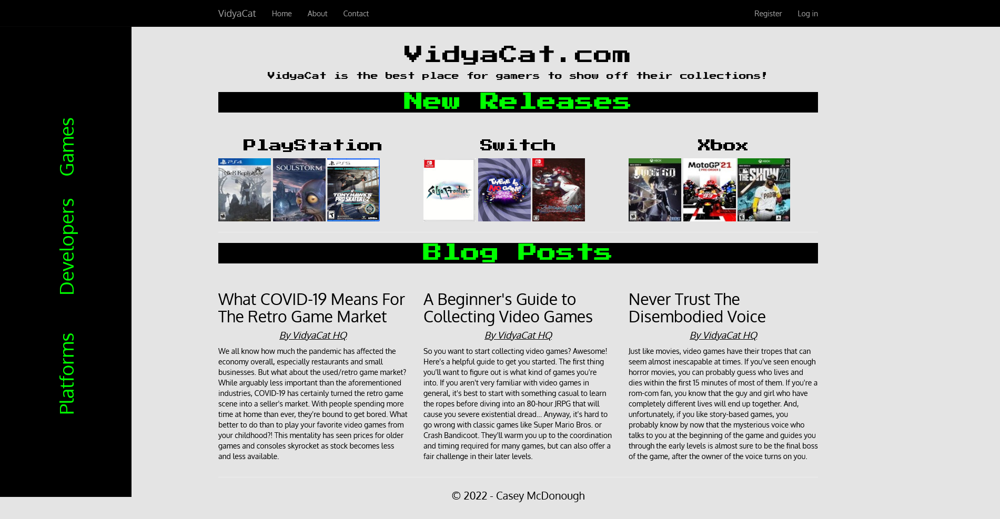

Hey there, my name is John Casey McDonough, but please call me Nick!
I am currently living in the High Desert region of Southern California, but I am originally from Indianapolis, Indiana. I am actively learning Python, Java, and React; as well as experimenting with containerization using Docker and Kubernetes.
Apart from coding, I enjoy playing, listening to, and producing music; playing video games; cooking; skateboarding; and making YouTube videos.
I'd like to share some background info with you so you can get to know me better - do you want the long version or the tl;dr?
The Long Version
I'm 29 years old and I've been coding with a career in mind since
October 2020, but I've wanted to be a programmer since I was 12. To
that end, I took several classes in high school and college -
covering languages like C++, Java, SQL, and HTML/CSS/JS.
My junior year of high school proved to be a major turning point in
my career aspirations, however, as I failed out of my AP Java
Programming course and took a huge blow to my confidence. Upon
entering college, I decided to abandon my dreams and declare a major
in Economics.
After 6 years of college, I decided mid-semester in my senior capstone course that Econ really just wasn't my thing. I left school to go to work full time at a data entry position for a financial services company, but I quickly found myself wanting more. I took a promotion at that company to a client-facing role, but that wasn't fulfilling me either - and then the COVID-19 pandemic hit.
A coworker from that company had gone through a coding bootcamp to
learn web development, and she mentioned that they were offering
free tuition as part of the CARES Act, so with nothing to lose I
decided to rekindle my interest in coding. I signed up for the
software development course, where I learned the essentials of C#,
specifically the ASP.NET Framework for building web APIs and MVC
structures in a code-first model.
I fell in love with the logic, the processes, and the syntax, and
everything finally clicked in a way that it hadn't when I was in
high school. Shortly after I graduated from the bootcamp, I was
brought on as an assistant instructor, responsible for helping
students not only debug their code, but understand how to
debug and why the solutions were correct. Knowledge without
context is only useful for bar trivia, so it's important for me to
figure out the reasoning behind an answer - and I loved being able
to help other people reach those "A-HA" moments.
As someone who has held jobs in a wide array of fields, ranging from food service to financial service, writing code for a living has been the most challenging yet rewarding experience of my working life, and I would love to keep doing it for years to come.
Maybe I will spend those years working with you?
The TL;DR
I've been coding as a career path for over 2 years, starting off as a bootcamp student learning API and MVC architectures in the C# ASP.NET Framework. After graduating, I was hired as a part of the instructor staff at that bootcamp, helping students who were . From there, I moved to a small startup, where I learned how to build and deploy full stack web projects in an Amazon Web Services cloud environment, using Node.js.
Prior to learning code, I was always interested in tech but never committed enough to make a living off of it, so I spent my working life in various positions, from food service and retail to mortgage and escrow. Nothing seemed to stick, so I eventually decided to do what I had actually wanted to do since I was in middle school, and now I have a vision for the future of my career.
Maybe you will be a part of that future?
My Projects
The images below are links which will take you to the code repositories for the respective project. Please feel free to browse around to get a sample of my work - though be aware that most of it was written when I was still a student, so it is not necessarily indicative of my current style and ability.
CSS Creature
The CSS Creature was a challenge to design a face using only CSS to style HTML <div> tags. I created a triangular creature loosely based on Katy Kat from Parappa The Rapper and Frylock from Aqua Teen Hunger Force, using an outrun/synthwave aesthetic and color scheme (my favorite color palette, if you couldn't tell...)
Looking back on this project now, and even in the thumbnail for this gallery entry, I see how little I knew about responsive design when I was first starting out. The face is off-center on the circle, and completely outside of the cirle on screens that are larger/smaller than 1920x1080 - the resolution of the monitor I was using at the time. Now that I have done more full-stack projects, I have begun to see the beauty of Bootstrap and mobile-first design patterns for front-end work.
Static Storefront
The static store front project was an exercise in HTML and CSS. For this project, I created a mockup of a record store website, featuring sections for new music releases, nearby concerts, and a Spotify iframe to showcase recent listening.
While I think the site turned out pretty well for just being raw HTML & CSS, this project also suffers from a lack of responsiveness. Again, it looks okay on a 1920x1080 screen but elements become shifted around and end up in weird places on any screens outside that resolution. This one could easily be cleaned up with some Bootstrap work.
RIP Mimi Parker.
Business Challenges Console App

These were the final project for the first section of my ElevenFifty course. The challenges covered a variety of business cases.
- Creating a café menu and list of ingredients
- Insurance claims processing
- Employee ID badge access control
- Budgeting for company outings
- Custom email templates based on customers' purchase history
- Categorizing vehicles by fuel type
- Inventory tracking for food vendors at a company BBQ
YMCA API Group Project

This group API project was my first major experience coding in a team environment. Working collaboratively was awesome, since I got to see how other people write their code and how different minds can come up with different solutions to the same problem. Our group was very supportive and helpful to each other throughout the project, and even when the GitHub branches got wonky just a few days before the due date, and the only working copy was on one of our local machines, we kept our cool and were able to finish strong and turn in a fully functional project that met many of its stretch goals.
I'm still proud of this project, and I'm definitely grateful for the Git lessons it taught me. Working on a team of devs is a far different experience than just coding by oneself, and figuring out how to integrate 3 separate styles and files into a cohesive unit was incredibly satisfying.
VidyaCat MVC Project
The final boss of Eleven Fifty - the individual MVC application. The challenge was to build a fully fleshed-out back end and customized front end using the MVC structure. I chose to build a repository for video games, with information about the developer, the platform, release date, genre, ESRB rating, and more. All columns in the list views are fully linked to view other lists filtered by the respective column, and the detail views for each game, developer, and platform are fully linked as well. One of my stretch goals was to implement user-specific collections for games the user has played, games they own, and games they want to own, but while attempting to implement the functionality I realized I was in over my head and was lost in a sea of debugging just 4 days before the due date. Thus, the finished product linked here is the result of 1 day of back-end coding, 1 day of back-end debugging, and 1 day of Razor/CSS front-end implementation.
Once again, due to the rush of trying to rewrite the whole project, I did not have the time to implement the Bootstrap functionality that would have made the site so much cleaner and more professional-looking. When I entered into the "Software Development" program, I was not expecting to work with anything front-end at all; in fact, I was averse to learning it because I wanted to perfect the back-end first. Now having worked in a full-stack role, I wish that I would have learned basic front-end functionality much sooner than I did. Such is life!
KPop Indiana Website
I am currently working freelance on this project for a local K-pop community back in Indianapolis. I joined the group as a social media admin for Instagram, but offered to take over as a web dev for them, as currently they are running a Squarespace site and using Google Forms/Docs to manage all of their data.
This project is great because I have been experimenting with building out the site in different languages/frameworks. I started in ASP.NET Core, but wanted something a bit more lightweight so I changed over to Node.js/Express, which I was already relatively familiar with from my job. However, I am a perpetual autodidact, and so I have restarted again - this time using Nx/React. Other technologies that I will be learning & improving in for this project include Docker, Nx Cloud, and ensuring test coverage using Jest and Cypress. Actually, I've restarted once more, using a less boilerplate approach of just raw Node.js for the server side and React.js for the client side, PostgreSQL for the database, and Docker/Nginx/Kubernetes to containerize and host the site. I will also be exploring remote hosting options so that I don't have to use my local machine's resources for the production site (for several reasons).